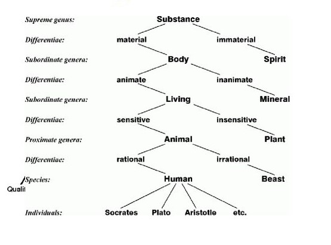

Ontology is a formal explicit description of concepts in a domain of discourse (classes (sometimes called concepts)), properties of each concept describing various features and attributes of the concept (slots (sometimes called roles or properties)), and restrictions on slots (facets (sometimes called role restrictions)). An ontology together with a set of individual instances of classes constitutes a knowledge base.
An ontology is a set of concepts and terms used to represent a particular domain of knowledge. They are a formal way to describe taxonomies and classification networks for their domains. Simple examples of ontologies include dictionaries and thesauri. Ontologies that are more complete and complex, meanwhile, use formal logic-based language.
